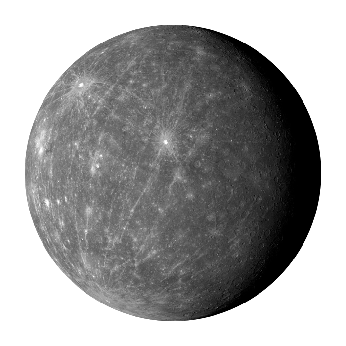

Mercury

Top 10 Facts!
- 1st planet from the sun
- A day on mercury is equivalent to 176 Earth days
- Mercury has one the fastest orbits around the sun with each year taking only 88 Earth days
- Mercury is the smallest planet in the solar system. It’s diameter is only 4,879 km
- Mercury’s density is 5.4 grams which makes it the second most dense planet in our solar system
- Mercury is the second hottest planet in the solar system with temperatures reaching up to 427 degrees fahrenheit
- Mercury has more craters than any other planet in the solar system due to its thin atmosphere
- Mercury’s pull of gravity is only 38% of that on Earth
- Mercury’s atmosphere is very thin because it is so close to the sun. The solar winds destroy the small atmosphere it has but also replenish some of the gases it lost
- Mercury’s surface appears to be wrinkled due to the cooling of its core. As the core cooled and shrunk the surface contracted in on itself create these “wrinkles”
Three Bonus Facts!
- Rings: Mercury dosn't have any rings
- Distance From The Sun: 35.98 million mi
- Namesake: Mercury, Roman Messenger of the Gods
Satellite Info
Mercury doesn’t have any natural satellites but researchers have launched one successful artificial satellite to it, called MESSENGER
|